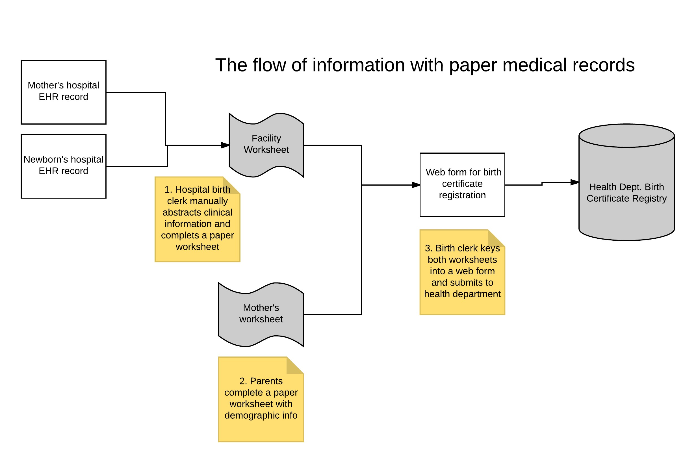

Easy Birth Registration App
The collection and submission of birth certificate information to state vital statistics agencies is currently the responsibility of birth certificate clerks, typically staff in medical records departments of hospitals. For each birth occurring in a hospital, birth clerks are required to abstract clinical information from the records of both the mother and the newborn. This information is hand-written onto a facility worksheet. A second worksheet, the mother’s worksheet, is completed by the mother and father, if applicable, and contains demographic information about the parents and the desired name of the newborn child. Both worksheets are entered into a web-based form called an electronic birth registration system (EBRS) and submitted to the state health department birth certificate registry
